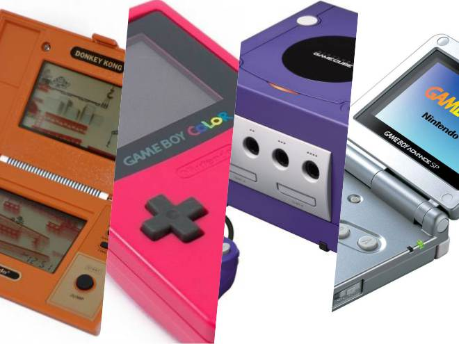
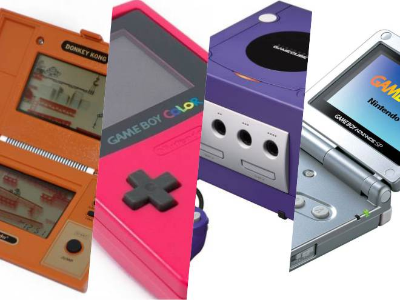
- desmontaje de consola.
- Retiro de componentes internos
- Cambio de pasta termina, usamos las mejores marcas para refrigerado
de consolas de ultima generacion.
- Limpieza de componentes.
- Limpieza de carcasa.
- Limpieza de la unidad de disco.
- tiempo aproximado 1 - 2 horas
 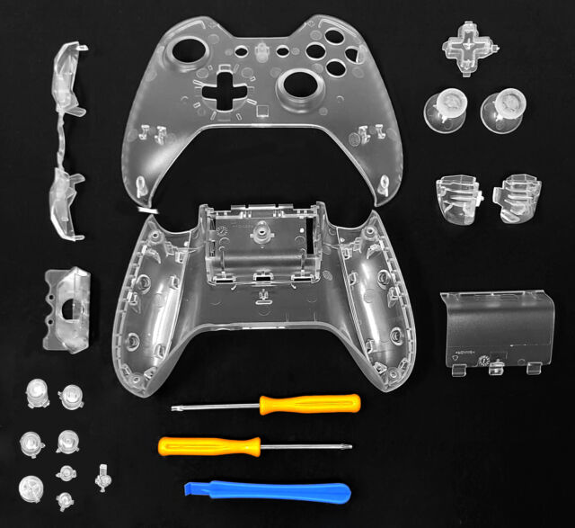
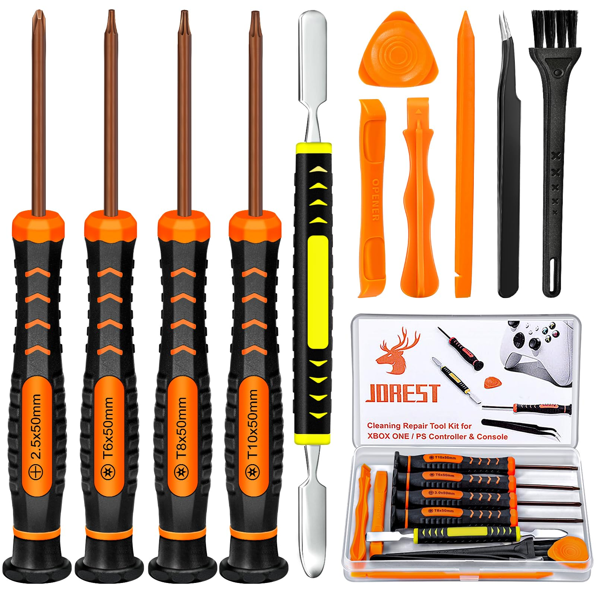
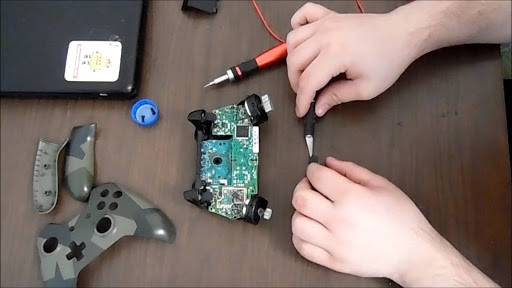
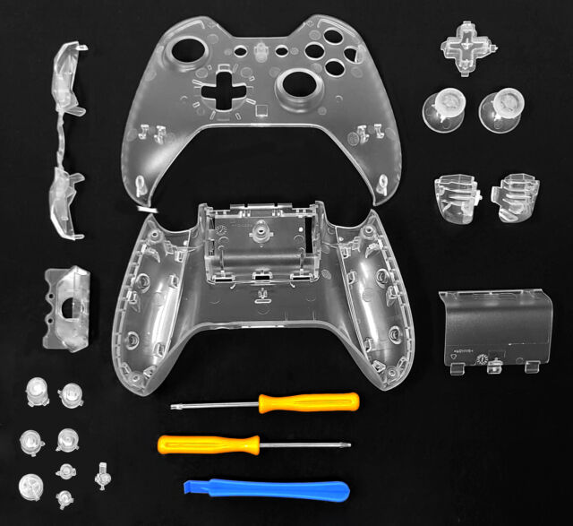
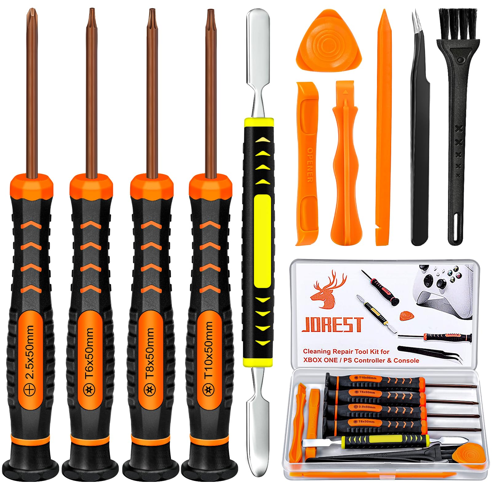
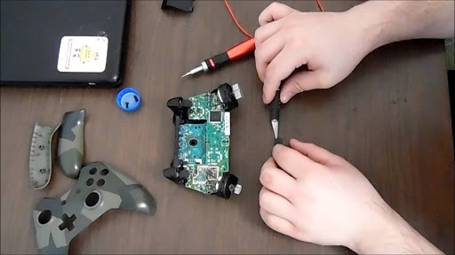
ANTES |
DESPUES |
|---|---|
| 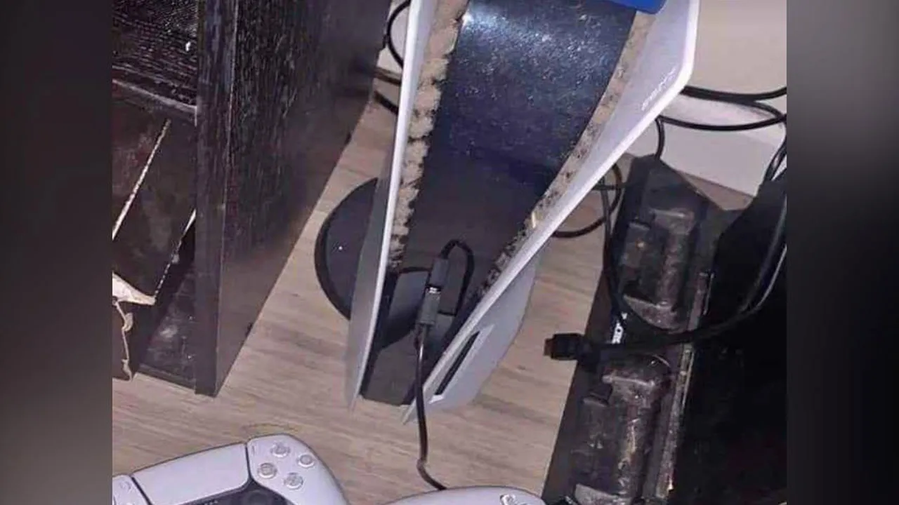 | 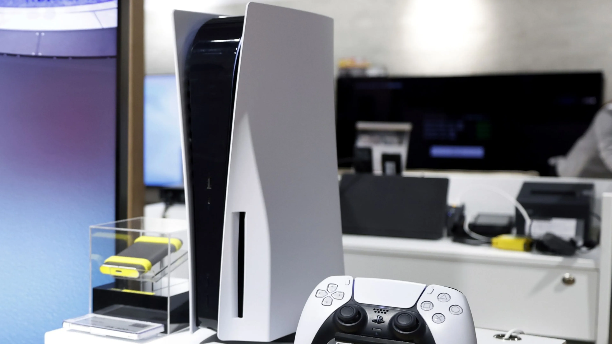 |
| 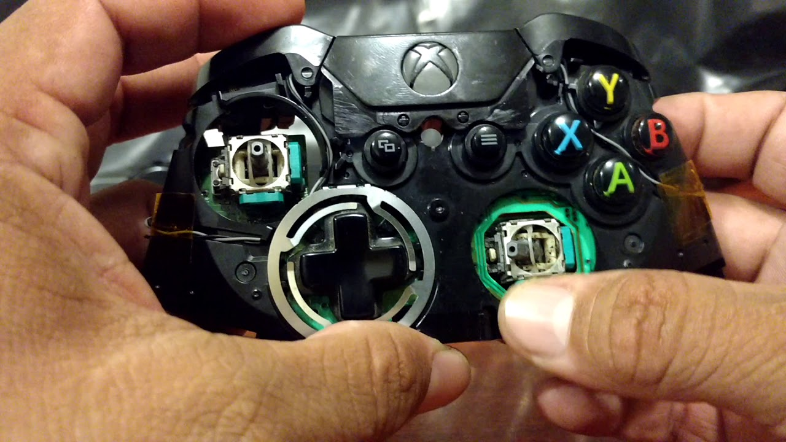 |